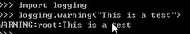

scrapy使用python内置的logging模块记录日志
1. logging.CRITICAL - for critical errors (highest severity)
2. logging.ERROR - for regular errors
3. logging.WARNING - for warning messages
4. logging.INFO - for informational messages
5. logging.DEBUG - for debugging messages (lowest severity)
1.简单使用方法
import logging
Logging.warning(“this is a test ”)
执行结果：

2.通用的记录日志的方法，可加入日志的级别
import logging
Logging.log(logging.WARNING,”this is a warning”)
3，通过logger记录日志
import logging
logger=logging.getLogger(_name_)
Logger.warning(“this is a warning”)
Scrapy provides a logger within each Spider instance, that can be accessed and used like this:
import scrapy
class MySpider(scrapy.Spider):
name = 'myspider'
start_urls = ['http://scrapinghub.com']
def parse(self, response):
self.logger.info('Parse function called on %s', response.url)
That logger is created using the Spider’s name, but you can use any custom Python logger you want. For example:
import logging import scrapy
logger = logging.getLogger('mycustomlogger')
class MySpider(scrapy.Spider):
name = 'myspider'
start_urls = ['http://scrapinghub.com']
def parse(self, response):
logger.info('Parse function called on %s', response.url)
These settings can be used to configure the logging:
• LOG_FILE
• LOG_ENABLED
• LOG_ENCODING
• LOG_LEVEL
• LOG_FORMAT
• LOG_DATEFORMAT
• LOG_STDOUT
【本文由麦子学院独家原创，转载请注明出处并保留原文链接】